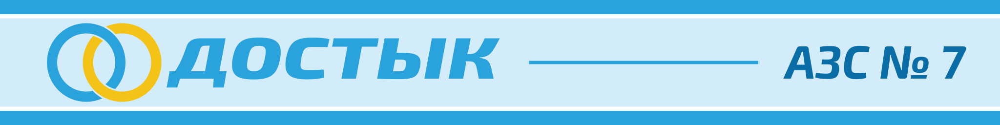

Dostyk
31 станция «Достык» по Зоне. Газ (LPG) на восьми из них, спрашивайте на кассе.
♥ 35 · Comment
Dostyk, since 1998: the second filling-station brand, with Kazakh fuel. AI-92, "Kazakh 95", diesel, and LPG at eight stations. 31 stations across the Zone.
«Достык» с 1998 года. Казахстанский бензин, «Казахский 95», дизель, газ на восьми станциях.
31 locations on Kartalar: Talas 8, Nurzhan 12, Iyık Janyl 2, Kyzyl-Adyr 1, Besh-Terek 1, Chu District 1, Kara-Bulak 1, Kum-Aryk 1, Talas–Nurzhan road 3, Uch-Emchek 1.
31 станция «Достык» по Зоне. Газ (LPG) на восьми из них, спрашивайте на кассе.
♥ 35 · CommentAZS Dostyk ✓АЗС «Достык»AZS Dostyk ✓АЗС «Достык»AZS Dostyk ✓АЗС «Достык»AZS Dostyk ✓АЗС «Достык»AZS Dostyk ✓АЗС «Достык»AZS Dostyk ✓АЗС «Достык»AZS Dostyk ✓АЗС «Достык»AZS Dostyk ✓АЗС «Достык»AZS Dostyk ✓АЗС «Достык»AZS Dostyk ✓АЗС «Достык»AZS Dostyk ✓АЗС «Достык»AZS Dostyk ✓АЗС «Достык»AZS Dostyk ✓АЗС «Достык»AZS Dostyk ✓АЗС «Достык»AZS Dostyk ✓АЗС «Достык»AZS Dostyk ✓АЗС «Достык»AZS Dostyk ✓АЗС «Достык»AZS Dostyk ✓АЗС «Достык»AZS Dostyk ✓АЗС «Достык»AZS Dostyk ✓АЗС «Достык»